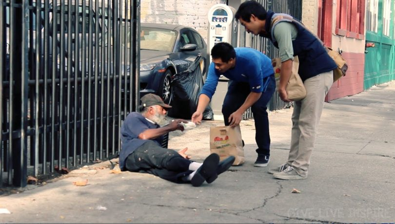
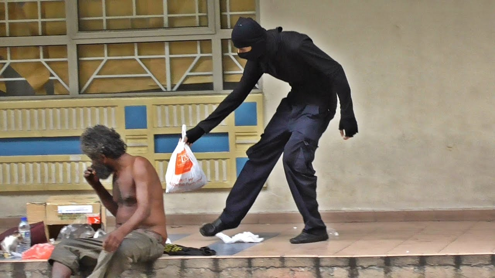
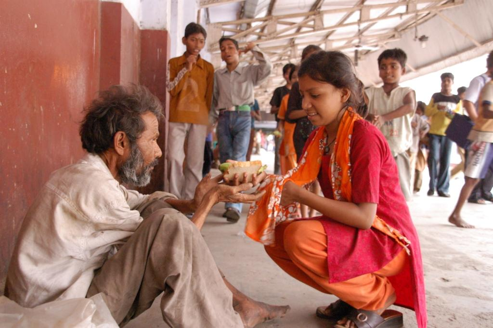
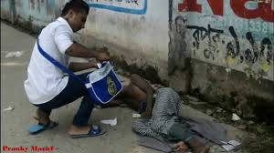

<div class="container">
  <div class="row">
  <div  class="col-md-6">


<div class="bs-example">
    <div id="myCarousel" class="carousel slide" data-ride="carousel" >
        <!-- Carousel indicators -->
        <ol class="carousel-indicators">
            <li data-target="#myCarousel" data-slide-to="0" class="active"></li>
            <li data-target="#myCarousel" data-slide-to="1"></li>
            <li data-target="#myCarousel" data-slide-to="2"></li>
            <li data-target="#myCarousel" data-slide-to="3"></li>
        </ol>   
        <!-- Wrapper for carousel items -->
        <div class="carousel-inner">
            <div class="item active">
                
            </div>
            <div class="item">
                
            </div>
            <div class="item">
                
            </div>
            <div class="item">
                
            </div>
        </div>
        <!-- Carousel controls -->
        <a class="carousel-control left" href="#myCarousel" data-slide="prev">
            <span class="glyphicon glyphicon-chevron-left"></span>
        </a>
        <a class="carousel-control right" href="#myCarousel" data-slide="next">
            <span class="glyphicon glyphicon-chevron-right"></span>
        </a>
    </div>
</div>
</div>
<div class="col-md-6 cont">
<p>
    Everyone of us are individual but one thought came into this action.Every one of us at some point of time think about helping poor.But unfortunately todays lifestyle made us so much busy that we even hardly find time to spend with our kids.Think which day have you laughed till tears came in?Definitely no..We forgotten to laugh openly because we want to be decent.We bother about our surroundings.But do our kids can act like that?NO.Because they are kids.and being kid is a great thing.and participating along with kid is more fun.

    So we are team who think any needy person as our kid and want to participate in sharing food with them as our first motto.
    
    If you give a price money to someone that may become less to other person.Even if you donate a nice saree then they might think of more costly one in their mind.If you gift a gold ring to somebody they might be waiting for chain ...but how much ever you give still other person wants you can not fulfill in your lifes time..Best thing is donate food...if stomach is full then definitly person admits to stop feeding.
    
    This makes win-win approach means the person who is donating will get satisfied and person who has taken food also satisfied.This is what we want to achieve.Everyone has to be happy its their right to be happy.
</p>

</div></div></div>